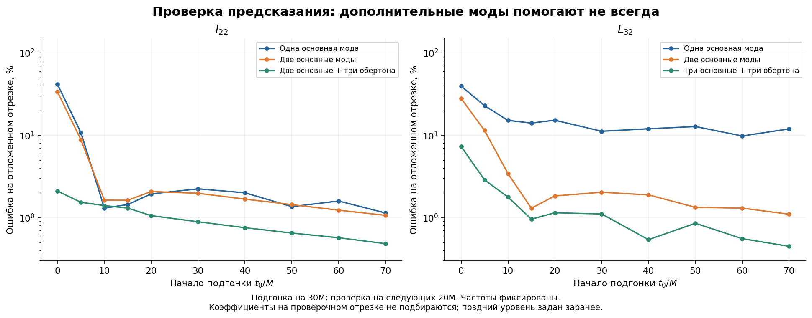
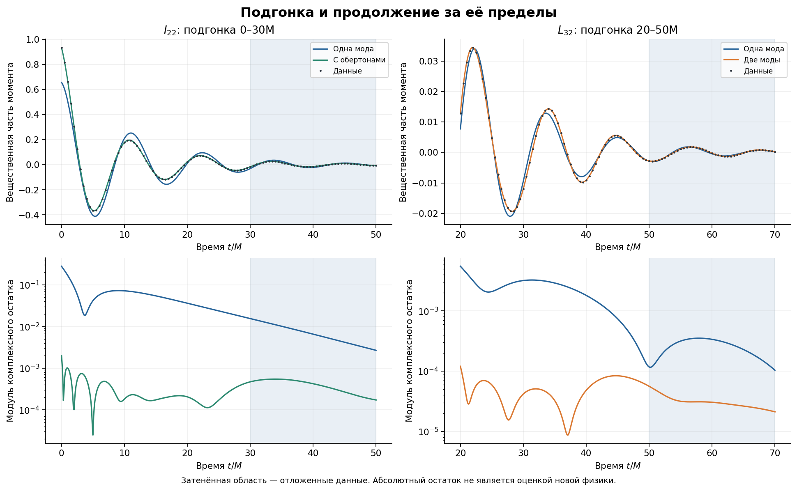

Отчёт сохранён как результат своего этапа. Исправления и границы всего выпуска сведены в итоговом отчёте.
Продолжение HF3 с данными Yitian — этап A2
Дата: 15 сентября 2026 года. Расчёты эволюции SpEC и Einstein Toolkit не запускались.
Получен новый воспроизводимый результат: смешение обычных керровских мод существенно улучшает описание L32 и его продолжение на соседний отрезок времени. Для раннего I22 обертоны сильно улучшают подгонку, однако погрешность продолжения остаётся заметно больше. Полное объяснение всех ранних моментов и дополнительная гиперформа этим не установлены.
Подтверждённая точка остановки
QC0 завершён до t=95M, it=48640, штатное завершение и две контрольные части зафиксированы в прежнем диалоге. Сейчас прочитаны сохранённые BH_HF3_R6B_output.zip и BH_HF3_R6B.py. Файлы контрольной точки на компьютере пользователя заново не проверялись. Первичный A1 не пересчитывался: исходный HDF5 опознан по контрольной сумме.
| Величина | QC0: из файла R6B | Yitian: из письма |
|---|---|---|
| Mf/M | 0.977461203279 | 0.95162 |
| Jf/M² | 0.648087073319 | Не сопоставлялось напрямую |
| χf=Jf/Mf² | 0.678319499425 | 0.68644 |
В прежнем ответе ассистент ошибочно назвал Jf безразмерным спином и переставил цифры в Mf. Программа R6B использовала правильное χf. Начальные условия и нормировки двух симуляций нельзя считать тождественными; параметры между ними не подменяются.
Что сделано в A2
Выбраны два момента одного набора: массовый I22 и спиновый L32. Модельные наборы взяты из обсуждения смешения мод авторами и расширены контрольными вложенными наборами. Их физическая мотивировка известна заранее, но A2 является исследовательской проверкой, а не заранее зарегистрированным статистическим испытанием.
После сопряжения столбца и вычитания среднего за 400–500M применён авторский множитель exp(−2iΩt), Ω=0.20878380853617037/M. Затем подгонялись только комплексные амплитуды:
$$z_{\mathrm{model}}(t)=\sum_k C_k\exp[-(\alpha_k+i\omega_k)(t-t_0)].$$
Частоты и затухания вычислены qnm 0.4.4 при Mf=0.95162M, χ=0.68644. Амплитуды определяются комплексным методом наименьших квадратов с равными весами отсчётов; перед решением нормируются столбцы матрицы. Частоты, масса и спин под момент не подбирались. Керровские частоты спинового веса −2 применены согласно модели статьи; это не утверждение, что сами скалярные геометрические моменты имеют спиновый вес −2.
| Мода (ℓ,m,n) | ω, M⁻¹ | α, M⁻¹ |
|---|---|---|
| (2,2,0) | 0.553471331 | 0.085421831 |
| (2,2,1) | 0.541024406 | 0.258312615 |
| (2,2,2) | 0.518015073 | 0.436245721 |
| (2,2,3) | 0.487436421 | 0.618669512 |
| (3,2,0) | 0.792030127 | 0.089004353 |
| (4,2,0) | 1.017167729 | 0.091425692 |
Обертон — более быстро затухающее колебание того же семейства. Индекс сферического момента, например L32, не заставляет его состоять только из одной моды (3,2,0). Дополнительные моды могут возникать из проекции угловой структуры возмущения на выбранные гармоники.
Период биений основных мод (2,2,0) и (3,2,0): 26.3381M.
Подгонка: [t0,t0+30]M. Проверка: (t0+30,t0+50]M, без повторной подгонки амплитуд. t0=0,5,10,15,20,30,40,50,60,70M. Различные окна перекрываются; их нельзя считать независимыми экспериментами. Поздний постоянный уровень и параметры конечной ЧД известны по другим частям этой же симуляции, поэтому это не полностью слепое предсказание будущего.
$$E=\frac{\left[\sum_j|z_j-z_{\mathrm{model},j}|^2\right]^{1/2}}{\left[\sum_j|z_j|^2\right]^{1/2}}.$$
Ниже показано 100E. Это относительная комплексная норма ошибки на отрезке; она не является максимальной поточечной ошибкой или вероятностью ошибки.
| Момент | Подгонка, M | Проверка, M | Набор мод | Ошибка подгонки, % | Ошибка проверки, % |
|---|---|---|---|---|---|
| I22 | 0–30 | (30, 50] | 220 | 22.3616 | 41.5247 |
| I22 | 0–30 | (30, 50] | 220 + 320 | 16.7113 | 33.6142 |
| I22 | 0–30 | (30, 50] | 220 + 320 + 221 + 222 + 223 | 0.1209 | 2.0975 |
| L32 | 20–50 | (50, 70] | 320 | 86.5950 | 101.8891 |
| L32 | 20–50 | (50, 70] | 220 | 13.1928 | 15.2437 |
| L32 | 20–50 | (50, 70] | 220 + 320 | 0.2993 | 1.8319 |
| L32 | 20–50 | (50, 70] | 220 + 320 + 420 | 0.2792 | 1.8708 |
| I22 | 20–50 | (50, 70] | 220 | 0.3645 | 1.9391 |
| I22 | 20–50 | (50, 70] | 220 + 320 | 0.2557 | 2.0712 |
| I22 | 20–50 | (50, 70] | 220 + 320 + 221 + 222 + 223 | 0.0458 | 1.0563 |
Содержательный вывод по L32: две фундаментальные моды существенно улучшают как подгонку, так и проверку на следующем отрезке по сравнению с одной. Это воспроизведение известного механизма смешения, а не новое открытие этого механизма.
Содержательный вывод по I22: на самом раннем окне добавление трёх обертонов резко снижает ошибку подгонки, но продолжение на 30–50M менее точно. На окне 20–50M добавление второй фундаментальной моды даже немного ухудшает проверку 50–70M. Поэтому формулировка «больше мод — лучшее физическое объяснение» здесь недостаточна.
Во всей сетке 19 из 160 вложенных сравнений дали ухудшение проверки при расширении модели. Это учёт отрицательных результатов, не частота статистической ошибки. Полные результаты и амплитуды сохранены в JSON.


Устойчивость и вычислительные проверки
Проверены: среднее по 350–500, 400–500 и 450–500M; прореживание обучающих отсчётов в 2 и 4 раза; отдельные изменения Mf и χ на половину последнего указанного разряда (±0.000005). Последнее — чувствительность к округлению, не полная погрешность массы или спина. Проверочные отсчёты при прореживании остаются прежними.
| Пример | Изменение позднего среднего: ошибка проверки, % | Шаг обучения 0.1–0.4M: ошибка проверки, % | Округление Mf, χ: ошибка проверки, % |
|---|---|---|---|
| I22, F2_O3, t0=0M | 2.09747–2.09747 | 2.09747–2.14075 | 2.09375–2.10119 |
| L32, F2, t0=20M | 1.83185–1.83185 | 1.82852–1.83185 | 1.82450–1.83921 |
| I22, F2, t0=20M | 2.07121–2.07121 | 2.07121–2.07142 | 2.06376–2.07867 |
Максимальное различие относительных ошибок при согласованном пересчёте в неповёрнутой системе: 4.93e-16. Это проверка алгебры, а не независимое физическое подтверждение.
Синтетическая известная сумма трёх мод восстановлена с ошибкой продолжения 4.33e-16. Максимальное число обусловленности нормированной матрицы во всех основных подгонках: 158.
Поздние флуктуации и вычитаемые уровни сохранены отдельно. Они не заменяют сравнение двух разрешений. Значение AMR из письма 5×10⁻⁸ не использовано как погрешность каждого мультиполя. Сам по себе остаток после конкретного набора мод не выделяет новую структуру: возможны дополнительные обычные моды, изменение их эффективных амплитуд, нелинейность, выбор времени/координат и численная ошибка.
Уточнение керровского ориентира QC0
В исходном R6B применялась приближённая формула BCW. По его собственным Mf и χ численный расчёт даёт:
| Ориентир | ω, M⁻¹ | α, M⁻¹ |
|---|---|---|
| R6B, приближённая формула | 0.538108542 | 0.084117941 |
| Численное решение Керра | 0.535340132 | 0.083450597 |
Для ранее сохранённых оценок третьего периода, без повторения подгонок или смены старых окон:
| Радиус | Различие частоты с численным Керром, % | Различие затухания, % |
|---|---|---|
| 15M | 0.2023 | 0.7398 |
| 30M | 0.2097 | 0.1186 |
Уточнение ориентира улучшает это описательное согласие. Старые ΔBIC автоматически не переносятся: их надо заново оценивать на исходных рядах с одной и той же целевой функцией. В старой программе свободные частота и затухание извлекались из отдельных регрессий фазы и лог-модуля, а не оптимизировались по тому же комплексному остатку, который входил в BIC. Коррелированные численные остатки также не задают готовую статистическую модель.
При численном периоде T=11.736810M конец третьего периода на r=40M ожидается около 104.210429M, если использовать прежний максимум 69M. Граница 105M остаётся достаточной. При прежнем шаге 1/512M ожидаемая конечная итерация 53760; это ожидание, а не выполненный расчёт.
Обновлённый маршрут
| Шаг | Что делаем | Условие завершения и перехода |
|---|---|---|
| A1 — завершён | Целостность данных Yitian, определения, поздние моменты | Сохранённый отчёт A1; заново не пересчитываем |
| A2 — завершён | I22, L32: смешение, обертоны, отложенные отрезки | Настоящий отчёт; успехи и ограничения сохранены |
| A3 — следующий шаг | Осесимметричные I20, I40, L30 и затем m=4: проверить поздний фон и ранние остатки | Сопоставить модели, окна, изменение коэффициентов и доступный численный уровень; не выбирать результат только по малому остатку |
| QC0, завершение HF3 | Подготовить восстановление 95→105M из it=48640; сохранить сетку и диагностику; проверить шов 95M и третий период r=40M | Частотный ориентир — собственные Mf,χ и численное решение; старые данные сохраняются; сравнение моделей по одному комплексному остатку |
| HF4-A | Установить, что именно можно восстановить из моментов и определения углового базиса | Отдельно карта скалярного поля и собственная метрика; для последней нужны площадь, базис/мера или qAB |
| HF4-B/C | Проверенная двумерная геометрия, затем обоснованное трёхмерное представление и фильм | Контроль углового разрешения и ошибок; видимые деформации не выдаются за внутреннее устройство ЧД |
| HF5 | Связь горизонта с исходящей волной одного и того же расчёта | Нужны соответствующие волновые ряды и согласование времени/конвенций |
Порядок ближайших действий: A3 по имеющимся данным, затем окончательный контроль QC0 перед заявлением о завершении его HF3. Найденный prepare_qc0_t95_recovery.py сохраняется как основа следующего восстановления; повторно просить пользователя искать его не требуется.
Ранее обсуждавшиеся 64/128 направлений остаются возможными сетками визуализации, но не независимыми наблюдателями. Новые направления, рассчитанные из тех же коэффициентов, сами по себе не дают независимой проверки реконструкции. Подбор числа направлений должен учитывать ℓ≤8, симметрии, угловую меру и конкретную задачу.
Под общим горизонтом этого набора понимается поверхность, найденная в численной симуляции как общий кажущийся горизонт, а не восстановленный глобальный горизонт событий. Мультиполи на нём не задают однозначно внутреннюю геометрию чёрной дыры. Исследование «гиперформы» остаётся гипотезой о согласованной динамической структуре; вывод о дополнительных измерениях отсутствует.
Повторение
Распаковать пакет. Исходный архив Yitian сохраняется отдельно; его не требуется скачивать или пересчитывать снова. Пример команды из папки пакета:
python BH_YITIAN_A2.py --input /путь/common_horizon_moments_data_and_scripts.zip --output repeated
Нужны numpy, scipy, h5py и matplotlib. qnm требуется только при флаге --recompute-spectrum. Пакет содержит вычисленную таблицу спектра и её происхождение. Изменять среду Windows пользователя для чтения результатов не нужно.
Источники методики: Chen и соавторы, разделы IV A–D; документация qnm. Числа настоящего отчёта получены из предоставленного файла и отдельно выполненного расчёта спектра, а не переписаны из статьи.